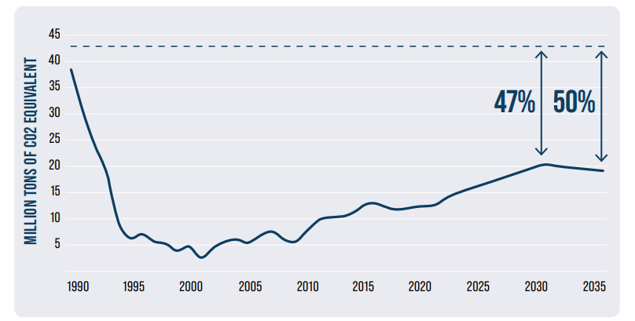

2026
GEORGIA'S NATIONALLY DETERMINED CONTRIBUTION (NDC) 3.0 1
Description of Georgia's Nationally
The goal of Georgia's Nationally Determined Contribution (NDC) is to foster sustainable, low-emission, and climate-resilient development, while balancing environmental imperatives with socio-economic priorities. In alignment with global efforts under the Paris Agreement to limit temperature rise to 1.5°C above pre-industrial levels, Georgia recognizes the urgent need for ambitious and immediate climate action.
Adopting a whole of society approach and following extensive inter-sectoral consultations, Georgia's Nationally Determined Contribution (NDC) is as follows:
· 1. Georgia is fully committed to limit total net greenhouse gas emissions by 47% below 1990 levels by 2030, with an extended target of 50% by 2035;
Figure 1. Total net greenhouse gas emissions at the national level for 2030, 2035.

·2. Georgia intends to contribute to global emissions reduction by approximately 26 million tons of CO2 equivalent by 2035, through enhanced access to climate finance and cooperative approaches;
·3. To facilitate the implementation of Georgia's Nationally Determined Contribution (NDC), the Climate Change Mitigation Strategy and Action Plan (CSAP) are being prepared. This framework identifies specific sectoral mitigation measures designed to achieve national climate targets and fulfill accepted commitments. Furthermore, the target indicators established in this document are fully harmonized with the benchmarks defined in the National Energy and Climate Plan (NECP).
·4. Georgia is committed to mobilizing domestic and international climate finance to systematically address adaptation gaps and constraints. A core priority remains the continuous assessment of climate-related risks, with a specialized focus on the adaptive capacities of its population, specifically vulnerable groups 2
·5. The adaptation issues and priorities identified in Chapter 5 of Georgia's Nationally Determined Contribution are being integrated into the country's first National Adaptation Plan (NAP). This process aims to establish transformative adaptation measures and innovative approaches to increase climate resilience;
·6. Georgia intends to adopting Human Rights-Based Approach (HRBA) in the formulation and implementation of its climate policies. This approach ensures that all mitigation and adaptation measures uphold the rights of the population, with a specific focus on vulnerable groups disproportionately impacted by environmental instability. To support this, the state will prioritize the collection of disaggregated data and the conduct of periodic vulnerability analyses to identify and address the specialized needs of marginalized communities;
·7. Georgia envisages to a just and inclusive transition, ensuring that the principles of substantive gender equality, social inclusion 3 4
·8. Georgia strives to identify high-impact sectors, territories, and communities to implement targeted just transition measures. Key strategic interventions include the development of reskilling and upskilling programmes for the workforce, the promotion of green employment opportunities, and the diversification of regional economies currently dependent on carbonintensive activities. Furthermore, the state prioritizes the socio-economic empowerment of vulnerable groups through tailored educational initiatives, capacity-building programmes, and access to green finance;
·9. Georgia acknowledges the transformative potential of climate technology transfer and Artificial Intelligence (AI) as critical enablers for achieving national climate objectives. The state is committed to fostering an innovation ecosystem that encourages the adoption of cutting-edge technologies for both mitigation and adaptation. By mobilizing domestic and international resources, Georgia will leverage AI-driven analytics to enhance climate resilience, catalyze low-carbon development, and ensure the sustainable management of natural resources.
·10. The timeframe for implementing this NDC spans 1 January 2026 to 31 December 2035.
·11. Paragraph 1 of Georgia's Nationally Determined Contribution establishes 1990 as the base year, using that year's anthropogenic greenhouse gas emissions and removals as the foundation for its climate targets;
·12. Total national greenhouse gas emissions and removals for 1990 may be recalculated periodically, in the event of methodological improvements in the biennial transparency report(s).
·13. The national emission reduction targets are established through a comprehensive analysis of seven key economic sectors. These include energy production and supply, buildings, transport, industry, waste management, agriculture, and Land Use, Land Use Change, and Forestry (LULUCF));
·14. Georgia plans to continue, to the extent possible, to record in its National Greenhouse Gas Inventory, greenhouse gases not controlled by the Montreal Protocol on Substances that Deplete the Ozone Layer. These include: carbon dioxide (CO2), methane (CH4), nitrous oxide (N2O), perfluorocarbons (PFCs), hydrofluorocarbons (HFCs) 5
·15. Georgia also intends to maintain the monitoring of carbon stocks within managed forests and soils. This inventory includes the following five carbon pools: aboveground (living) biomass, belowground (living) biomass, dead wood (woody dry biomass), fallen biomass, and soil organic carbon (SOC);
·16. Adaptation to climate change involves the most vulnerable economic sectors, ecosystems and natural resources. These include (but are not limited to): human health and well-being, biodiversity, mountains, glaciers, forests, aquatic ecosystems, the Black Sea coastal zone, surface and groundwater resources, agriculture, healthcare, tourism and cultural heritage;
·17. Decades of systematic monitoring have revealed that climate-induced natural disasters in Georgia disproportionately impact specific demographic groups, necessitating urgent and targeted adaptation measures. These high-vulnerability cohorts include women and girls, children, youth, the elderly, and persons with disabilities, internally displaced persons (IDPs), migrants, ethnic minorities, and individuals with chronic illnesses, farmers, low-income households, and populations residing and working in conflict-affected areas or high-risk geohazard zones;
·18. Georgia supports participatory approaches that involve vulnerable groups in the planning, design, implementation, monitoring and evaluation of climate change adaptation strategies and actions. This ensures that the diverse needs of vulnerable groups are reflected in adaptation actions.
·19. In accordance with paragraphs 59-63 of Annex II to Decision 18/CMA.1 on the modalities, procedures and guidelines (MPG) to implement and support the transparency framework set out in Article 13 of the Paris Agreement, Georgia undertakes to provide updated information in its biennial transparency report on the circumstances and institutional arrangements related to the implementation of its nationally determined contribution in the country, with particular attention to vulnerable groups and persons living in rural areas;
·20. Georgia appreciates the role of the country's municipalities in developing climate change policies, recognizes the progress achieved within the framework of the Covenant of Mayors, and calls on municipalities to be further active.
·21. Georgia's Nationally Determined Contribution recognizes the progress made in the implementation of this document, described in the First Biennial Transparency report;
·22. In accordance with paragraphs 3 and 5, Georgia plans to establish a reliable, repeatable cycle of adaptation and mitigation policies, including developing frameworks for planning, implementation, monitoring, evaluation and learning;
·23. Georgia is committed to enhancing its implementation of the Enhanced Transparency Framework (ETF) by establishing a dedicated technical working group and transitioning its electronic data management system into a centralized National Transparency Portal.
·24. Georgia welcomes decision 1/CMA.5 on the results of the first global common report, in particular the provisions listed in paragraph 28:
·25. Georgia has determined emission reduction targets based on the assessment of the potential for reducing greenhouse gas emissions for each sector.
·26. By 2030, the country intends to cut emissions from energy generation and supply by 15%, compared to the without measure (WOM) scenario, described in BTR. Moreover, the country intends to maintain this reduction level through 2035, ensuring that its energy sector continues on a low-carbon development path;
·27. Georgia intends to conduct a comprehensive study to assess its energy projects, identifying which initiatives can be financed nationally and which will require support from international climate finance. The goal is to spotlight the most valuable, high-impact initiatives, especially those that can be built through cooperation under the Paris Agreement.
·28. Georgia intends to increase its mitigation target of the greenhouse gas emissions from the transport sector to 20% by 2030, compared to WOM scenario. Georgia also intends to further reduce the greenhouse gas emissions from the transport sector by 25% by 2035, compared to the same scenario.
·29. Georgia intends to promote the development of electromobility using low-carbon electricity produced in Georgia. This will be achieved by improving fiscal policy and accessing international climate-related financing, which will make it possible to meet the high investment requirements for the accelerated introduction of electric transport and avoid a long-term dependence on traditional means of transport;
·30. Georgia strives to continue to support the development of alternative fuel infrastructure by further improving its legislation so that the public has access to the appropriate infrastructure network - for charging or refueling road transport with alternative fuels;
·31. Georgia intends to continue work on urban mobility improvement and reduction of transport emissions by implementing measures in municipalities aimed at reducing the demand for private cars and improving the quality and coverage of public transport; attention will also be paid to the development of intercity railway transport;
·32. Georgia recognizes its importance as a transport corridor and aims to increase the efficiency and competitiveness of the logistics sector by improving the legislative and institutional framework, increasing transport safety, and integrating the country into international transport systems and networks. The main priority is the further development of Georgia's railway sector, which is an efficient and low-carbon opportunity for both freight and passenger transportation;
·33. Georgia recognizes the rapid growth of energy consumption by pipeline transport. Its share in total domestic transport fuel consumption has increased from 6% in 2014 to 18% in 2022, which is a result of the increase in oil and gas transit through the territory of Georgia. Therefore, Georgia intends to work with key stakeholders to significantly reduce emissions from this sub-sector;
·34. Georgia intends to conduct comprehensive studies in the transport sector to assess transport activities (passenger, freight and courier) and the current level of active transport fleet, which is important for planning and monitoring mitigation measures;
·35. Georgia intends to conduct a comprehensive study to assess its energy projects, identifying which initiatives can be financed nationally and which will require support from international climate finance. The goal is to spotlight the most valuable, high-impact initiatives, especially those that can be built through cooperation under the Paris Agreement.
·36. By 2030, Georgia intends to support the use of low-emission approaches in the buildings sector by enforcing energy efficiency regulations for buildings, which will contribute to increasing the energy efficiency of new buildings;
·37. Georgia plans to annually renovate a portion of administrative buildings by 2030 using energy-efficient approaches in order to create a successful example for further upgrade of the construction sector;
·38. Georgia plans a detailed inventory of the commercial building sector to assess parameters that are important for assessing mitigation impacts and determining target indicators (e.g. heated areas, energy service demand trends, and levels of access to technologies);
·39. Georgia recognizes that as a result of the increase in heated spaces and the reduction of energy poverty, emissions from residential buildings are increasing significantly, which usually follows economic growth. Georgia understands the high importance and social impact of implementing mitigation measures in this sector and plans to use cooperative approaches among the Parties to the Paris Agreement to decarbonize the sector.
·40. Georgia supports low-carbon development of industry sector through facilitate of enabling environment for the climate-friendly innovative technologies and services in order to achieve no less than 5% of emission limitations by 2030, and by 2035, by 8%, compared to emissions projected by the WoM scenario;
·41. Recognizing the increasing trend of nitrous oxide and hydrofluorocarbon emissions in the sector, Georgia will consider taking steps to promote the introduction of low-emission approaches over the next decade, in cooperation with international partners;
·42. Georgia further supports the development of using cleaner, alternative fuels in mineral production, including through cooperative approaches to ensure the sustainable development of the sector;
·43. In order to foster low-emission development of the industry sector, Georgia further intends to explore opportunities for efficient energy consumption and reduced dependence on fossil fuels in the metallurgy and chemical industries (except nitrous oxide activities anticipated in paragraph 40), ensuring a cooperative approach;
·44. Georgia intends to accelerate the ongoing reform of municipal solid waste management and the construction of wastewater treatment plants to promote low-emission development, as well as the introduction of climate-friendly practices, innovative technologies and circular economy approaches, including through cooperative approaches;
·45. Georgia continues to support efforts to mitigate the impact of climate change, in particular by improving waste management - introducing advanced practices such as municipal waste separation, recycling, composting, and methane capturing. In this process, the priority will be given to capacity building programmes to empower and equip vulnerable groups and local communities with the necessary knowledge, which is essential for their active engagement in waste management initiatives and getting respective benefit.
·46. Georgia has defined adaptation goals taking into account adaptation needs and priorities, based on the Fifth National Communication;
·47. Georgia's Nationally Determined Contribution (NDC) document emphasizes the critical role of emergency response in social protection, protecting the population from the impacts of climate change and strengthening its resilience. This could be achieved by improving the existing emergency response system, including the introduction of early warning systems; as well as by forecasting the expected occurrence of specific extreme events and identifying individuals/families particularly vulnerable to them at the local level. Particular measures are as follows: increasing targeted cash assistance; identification of individuals and families particularly vulnerable to extreme weather events; public programmes facilitating provision of sustainable livelihoods and connecting mitigation of extreme weather consequences with social protection; schemes of agricultural insurance; distribution of drought-resistant crops; and ensuring access of all families to climate change resilient dwelling;
·48. Georgia intends to strengthen efforts to improve the resilience and adaptive capacity of communities living in areas at high risk of extreme weather events to the impacts of climate change by developing targeted measures;
·49. Georgia intends to implementing comprehensive adaptation measures aimed at mitigating climate change impacts across its Black Sea coastline, mountainous regions, and water and forest ecosystems. These interventions are designed to enhance the resilience of local populations, safeguard livelihoods, and ensure the continued provision of essential ecosystem services.
·50. Georgia intends to the continuous assessment of climate change impacts on glaciological systems and the availability of groundwater and surface water resources. Such evaluations are critical for ensuring the long-term sustainable management of water supplies, specifically to support climate-resilient agriculture, hydropower generation, and domestic consumption;
·51. Georgia's Nationally Determined Contribution (NDC) incorporates key lessons from previous adaptation cycles to enhance national resilience against extreme weather events. Central to this strategy is the deployment of comprehensive Early Warning Systems (EWS) in highrisk zones, alongside integrated protective measures designed to safeguard vulnerable communities and build local adaptive capacity;
·52. Georgia underscores the importance of data collection and evidence-based analysis regarding climate-induced migration throughout the implementation of its Nationally Determined Contribution (NDC), for formulating targeted policy recommendations;
·53. Georgia extends an invitation to all relevant stakeholders and international partners to facilitate the implementation of the transformative adaptation measures outlined in the National Adaptation Plan (NAP), to find solutions to climate-related challenges and enhance the effectiveness of existing practice.
·54. Guided by the Fifth National Communication to the United Nations Framework Convention on Climate Change (UNFCCC) and the Action Plan for Managing Public Health Risks Related to Heat Waves 2024-2030, Georgia intends to the establishment of an integrated early warning, monitoring, and risk management system;
·55. Georgia intends to conduct comprehensive vulnerability assessments to evaluate the impact of climate change on public health and the national healthcare infrastructure. Building on these findings, the state will formulate targeted adaptation strategies to enhance the resilience of the health sector, with a particular focus on mitigating the risks associated with the increasing frequency and intensity of extreme weather events;
·56. Georgia considers a human rights-based approach to climate adaptation by addressing the specific needs of vulnerable populations to mitigate climate-sensitive health risks. The state aims to ensure equitable access to healthcare services, bolster localized adaptive capacity, and facilitate the meaningful participation of marginalized groups in the governance, design, and implementation of health adaptation strategies;
·57. Georgia intends to conduct comprehensive assessments to evaluate climate change as a compounding risk factor for vulnerable populations;
·58. Within the framework of its Nationally Determined Contribution (NDC), Georgia extends an invitation to partners and stakeholders to collaborate with health and environmental institutions in advancing research on the climate-health nexus.
·59. Georgia intends to strengthen the climate resilience of major resorts and cultural heritage sites. This includes infrastructure adaptation, diversification of tourism services, and fair distribution of tourism benefits among local communities and vulnerable groups.
·60. In alignment with the Convention on Biological Diversity (CBD) and the National Biodiversity Strategy and Action Plan (NBSAP), Georgia intends to enhancing the resilience and adaptive capacity of its unique biological heritage. This strategy involves the expansion of national ecological networks and protected area systems, alongside the promotion of sustainable ecosystem management to safeguard endemic and threatened species within climateresilient refugia.
·61. Georgia has identified its cross-cutting sectors for inclusion in the Climate Mitigation Strategy and National Adaptation Plan, recognizing the interdependencies between mitigation and adaptation efforts while ensuring inclusivity and equality.
·62. The framework of the Nationally Determined Contribution (NDC), supports fostering lowcarbon development pathways within the agricultural sector by prioritizing the promotion of climate-smart agriculture (CSA) and the sustainable expansion of agritourism;
·63. Georgia continuous supporting farmers, as well as agricultural service and input providers, in implementing sustainable practices, such as zero-tillage and conservation approaches, restoration and development of windbreaks, and recycling of agricultural waste. This initiative will include access to appropriate machinery, equipment, and technologies that will improve soil health and transform agricultural waste into valuable fertilizer. All of this will contribute to achieving both climate change mitigation and adaptation goals in the agricultural sector;
·64. Georgia intends to supporting farmers with the diversification of rural business models, integrating value-added activities, organic farming schemes and other certification standards, as well as agro-cultural services;
·65. Georgia intends to reduce emissions from enteric fermentation by improving animal welfare, as well as feed quality and animal nutrition;
·66. Georgia's Nationally Determined Contribution supports the implementation of manure management mitigation measures by encouraging and providing financial support for good practices such as manure separation, storage and recovery as biogas, as well as its use as fertilizer or soil amendment;
·67. The Nationally Determined Contribution (NDC), supports the reduction of both direct and indirect soil emissions through the promotion of precision fertilization techniques. By optimizing nutrient use and implementing nature-based solutions -such as the integration of cover crops and the establishment of vegetated buffer strips -the state aims to mitigate nitrogen leaching and ensure the long-term protection of aquatic and terrestrial ecosystems;
·68. Georgia prioritizes in its commitments equal access to services and resources, training and financial empowerment of smallholder women farmers, youth and other vulnerable groups, to promote inclusive and equitable development of the agricultural sector.
·69. Georgia recognizes that forests encompass 44.5% of its national territory and remains committed to the sustainable management of these vital carbon sinks. By 2035, the state intends to enhance the forest sector's carbon sequestration capacity by 15% relative to 2015 levels. This target will be achieved through the institutionalization of Sustainable Forest Management (SFM), the restoration of degraded forest landscapes, and the strategic integration of high-conservation-value forests into the national ecological network and protected area systems;
·70. Georgia intends to the sustainable management of its forest resources by prioritizing the enhancement of both forest cover and ecosystem integrity. Central to this strategy is the systematic assessment of forest areas impacted by climate-induced stressors, using nationally defined vulnerability criteria. These assessments will inform the integration of targeted adaptation measures for vulnerable forest landscapes within the overarching National Adaptation Plan (NAP) framework;
·71. To contribute to global climate mitigation objectives and to alleviate anthropogenic pressure on primary forest ecosystems, Georgia intends to strengthen cooperative approaches under the Paris Agreement, prioritizing afforestation and reforestation initiatives and the strategic development of fast-growing timber plantations;
·72. Georgia intends to the implementation of the REDD+ framework (Reducing Emissions from Deforestation and Forest Degradation) as a primary tool for climate mitigation and the enhancement of forest carbon stocks, as well as to the mobilization of domestic and international climate finance, for promoting sustainable forest management and conservation;
·73. In accordance with the Land Degradation Neutrality (LDN) targets, Georgia intends to the ecological restoration of 70,000 hectares of degraded land by 2035 and the modernization of irrigation infrastructure;
·74. Georgia intends to the reduction of greenhouse gas emissions from pastures through the institutionalization of Sustainable Pasture Management. This strategy encompasses the implementation of rotational grazing systems, the restoration of degraded grazing lands, and the enforcement of optimal stocking rates to mitigate overgrazing, ensuring the ecological integrity of both agricultural landscapes and protected area systems;
·75. Georgia intends to explore the potential of wetlands in the climate change mitigation process, reduce greenhouse gas emissions from such areas, and increase carbon sequestration capacity, including in protected and other conservation areas.
·76. Georgia recognizes education as a fundamental transformative tool in addressing the climate crisis and underscores the imperative of inclusive and equitable climate literacy. The state prioritizes the meaningful participation of children, youth, women, and persons with disabilities in all educational initiatives, to foster awareness rising and ensure that the transition to climate resilience adheres to the principle of leaving no one behind;
·77. Georgia intends to the mainstreaming of climate change across all tiers of the formal education system, from early childhood and pre-school to primary and secondary levels;
·78. The Nationally Determined Contribution (NDC), calls upon educational institutions to accelerate the climate change education including by integrating climatesmart technologies into educational frameworks, and these matters be integrated in the professional and high education levels, in a corresponding sectors , with the evolving requirements of the green economy, ensuring a workforce capable of addressing climate-related challenges and meeting the increasing demand for sustainable employment;
·79. It is important for Georgia to support the advancement of climate science by prioritizing robust funding for specialized research and expanding access to domestic and international scholarship programmes. This, in turn, will facilitate close collaboration between research and policy development and informed decisionmaking;
·80. Georgia's Nationally Determined Contribution (NDC) calls on employers to systematically implement information and education initiatives, particularly in high-emission sectors, and to highlight their role in mitigating and adapting to the impacts of climate change, as well as in responding to loss and damage;
·81. Georgia underscores the vital role of informal and non-formal education in enhancing public climate awareness. The state aims to strengthen multi-level and international cooperation to engage a diverse range of stakeholders, including children, youth, educators, local municipal authorities, and media organizations.
·82. Georgia understands that as climate change intensifies, it causes unavoidable harm that affects people, nature, and livelihoods, especially among the most vulnerable communities;
·83. Georgia understands the critical importance of operationalizing the Enhanced Transparency Framework (ETF) established under Article 13 of the Paris Agreement. In strict accordance with paragraph 115(b) of Decision 18/CMA.1 and its associated Modalities, Procedures and Guidelines (MPGs), Georgia intends to ensuring that its Biennial Transparency Report (BTR) provides accurate, exhaustive, and transparent data. This reporting will specifically detail national efforts to prevent, minimize, and address loss and damage associated with the adverse impacts of climate change;
·84. Within the framework of its Nationally Determined Contribution (NDC), Georgia calls all relevant stakeholders to explore specific opportunities for implementing activities focused on the prevention, minimization, and addressing of loss and damage.
The preparation of Georgia's Third Cycle Nationally Determined Contribution (NDC) was coordinated by the Ministry of Environmental Protection and Agriculture of Georgia with assistance from the United Nations Development Programme (UNDP) under its 'Climate Promise' initiative.